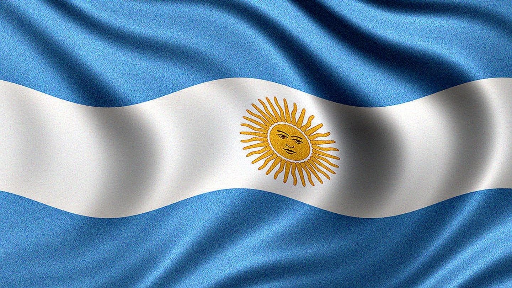
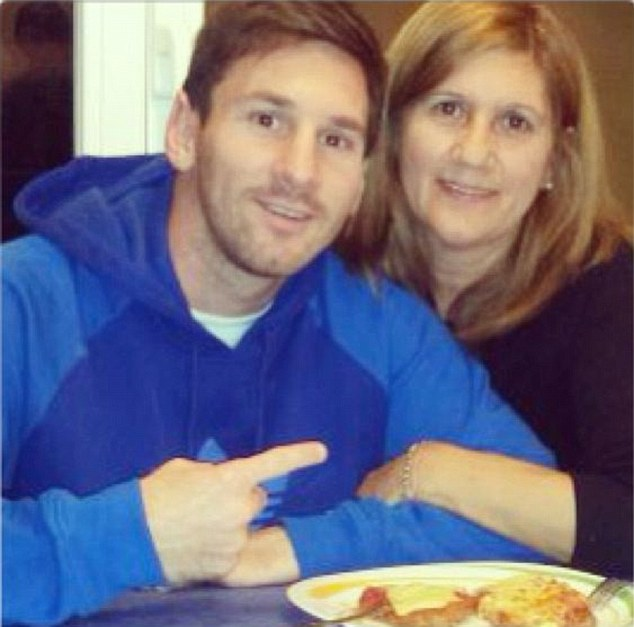
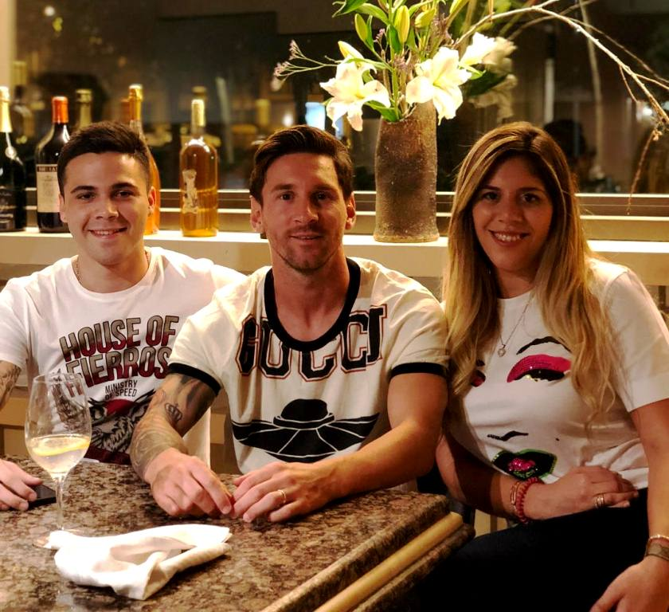

Argentina is a country that is in the world cup. They recently lost to Saudi Arabia and then on saturday they beat Mexico 2 to 0. Messi scored and Fernendaz scored.
They have good players like Messi,Fernendaz, and Martinez. They have two players named martinez one is striker and the other one in the goal keeper. One of there players named Alvarez always wanted to play with messi in the world cup and this year he was able to live his dream and play in the world cup.
Messi is my favorite player on the team.
His parents are Jorge Horracio Messi and Celia Maria Cuccittini
He had 3 siblings including Matias Messi, Rodrigo Messi and Maria Sol Messi.
He is 35 years old.
They recently won the world cup against France and it was a very good game it started with Argentina in the lead 2-0 and then in the end with 2 minutes left they tied it up 2-2 and then Mbappe had a hat trick with three goals putting them up 3-2 then Alvarez cam back when his team needed it the most and scored making it 3-3. They went into penealty kicks and argwntina won 5-3 in penalty kicks.